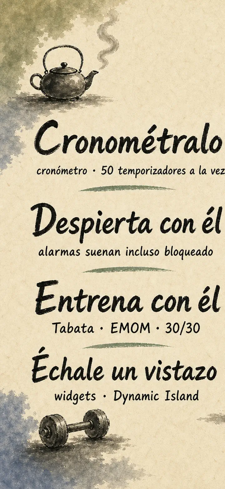
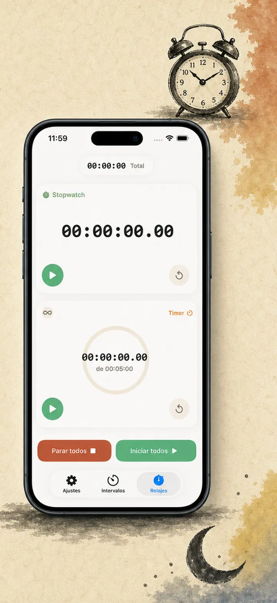
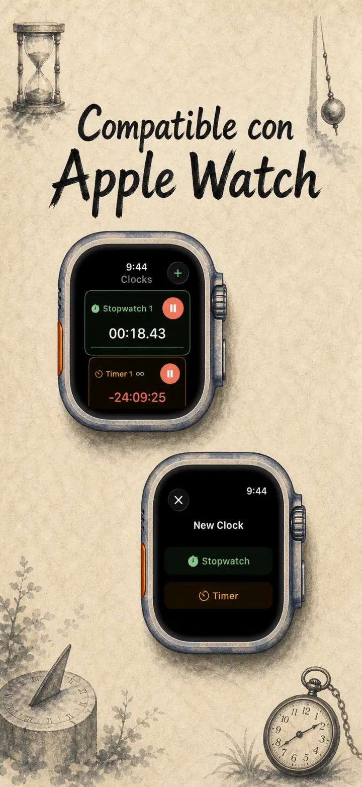
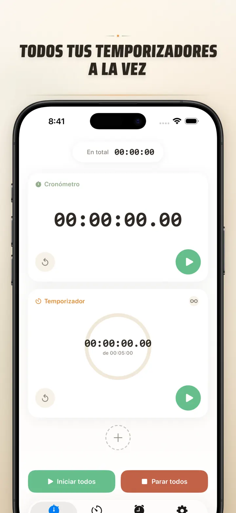
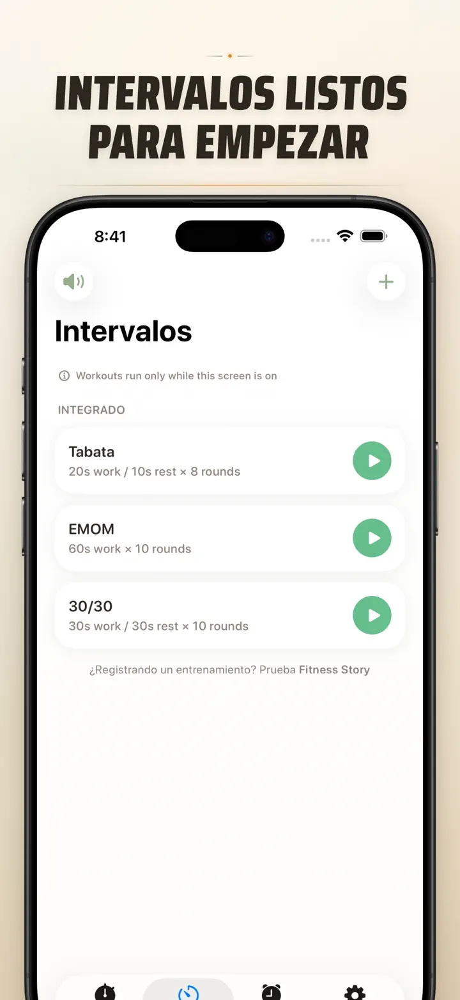
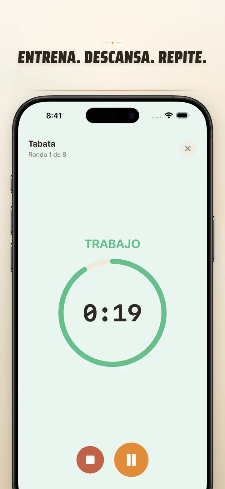
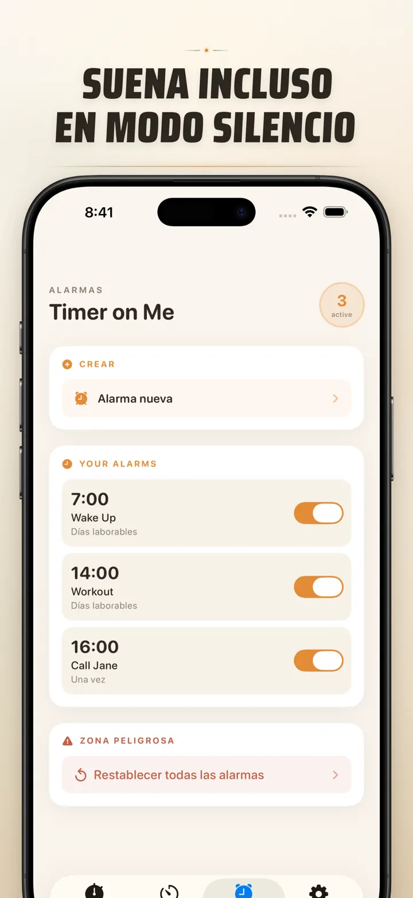

Timer on Me
Timer, Alarma, Cronómetro HIIT
Ya disponible: alarmas con fecha — programa una alarma única para cualquier fecha y hora, con alarmas recurrentes, 50 temporizadores, HIIT & Tabata y Apple Watch.
Descargar en App Store
Acerca de la app
Timer on Me es tu multi-timer y cronómetro para iPhone, iPad y Apple Watch. Hasta 50 timers corriendo a la vez, intervalos precisos y alarmas que sí suenan — aunque tengas el iPhone bloqueado o la app cerrada.
ALARMAS
- Despertador y recordatorios con etiquetas personalizadas y programación por día de la semana
- Con tecnología AlarmKit — suenan aunque el iPhone esté bloqueado o Timer on Me cerrada
- Snooze configurable (3 / 5 / 9 / 15 / 30 minutos) o sin snooze
- Elige entre los tonos integrados o importa tus propios sonidos
- Activa/desactiva con un toque desde la pestaña Alarmas
INTERVALOS Y ENTRENAMIENTOS
- Presets Tabata, EMOM y 30/30 listos — dos toques y arrancas
- Editor de intervalos personalizado: trabajo, descanso y rondas en minutos y segundos
- Modo entrenamiento a pantalla completa con colores por fase y opción de silencio
- Pausa, salto y reanudación durante la sesión sin perder el avance
APPLE WATCH
- App nativa real de watchOS, no un simple espejo del celular
- Varios cronómetros y timers corriendo en la muñeca al mismo tiempo
- Cronómetro con precisión de centésimas de segundo
- Complicaciones dedicadas para acceder con un tap
- Funciona sola, aunque el iPhone no esté cerca
50 TIMERS A LA VEZ
- Hasta 50 timers y cronómetros independientes en una sola sesión
- Arranca, para y reinicia cada uno o por grupos
- Repetición automática para rondas cíclicas
- Los timers siguen corriendo después del cero para registrar el tiempo extra
- Barras de progreso con color: amarillo al 50%, rojo al 10%
- Arrastra para reordenar y ponle el nombre que quieras
ALERTAS CONFIABLES
- AlarmKit: las alarmas suenan aunque el iPhone esté bloqueado o la app cerrada
- Dynamic Island y Live Activity para checar el avance de un vistazo
- Widgets de pantalla de inicio en tamaño chico, mediano y grande
- Tonos integrados: campanas, cantos de pájaros, teléfonos vintage
- Toca para escuchar el tono antes de elegirlo
- Modo "Mantener pantalla prendida" para sesiones largas
PERSONALIZA Y COMPARTE
- Muestra u oculta decimales, totales y porcentajes
- Guarda y sobrescribe configuraciones, las traes de vuelta con un tap
- Exporta como CSV, JSON o texto plano
- Compártelas con compañeros, alumnos o tu coach
PARA iPhone, iPad Y APPLE WATCH
- Diseños que se adaptan a cualquier pantalla
- Split View en iPad
- Disponible en 34 idiomas
IDEAL PARA
- HIIT, Tabata, CrossFit y entrenamiento en circuito
- Rounds de box y artes marciales
- Pomodoro para estudiar, prepararte para exámenes y concentrarte
- Café de olla, huevos tibios, carnitas, pastel en horno y tiempos de cocina
- Yoga, pilates, meditación y respiración
- Ensayos de presentaciones y práctica de instrumentos
- Clases, talleres y dinámicas de grupo
- Juegos de mesa y reuniones en casa
¡Descarga Timer on Me y toma el control de cada minuto — en el gym, en la oficina o en casa!
Política de privacidad: https://masawata.net/privacy-policy.html Términos de servicio: https://www.apple.com/legal/internet-services/itunes/dev/stdeula/
Capturas de pantalla






Timer on Me
Ya disponible: alarmas con fecha — programa una alarma única para cualquier fecha y hora, con alarmas recurrentes, 50 temporizadores, HIIT & Tabata y Apple Watch.
Descargar en App Store